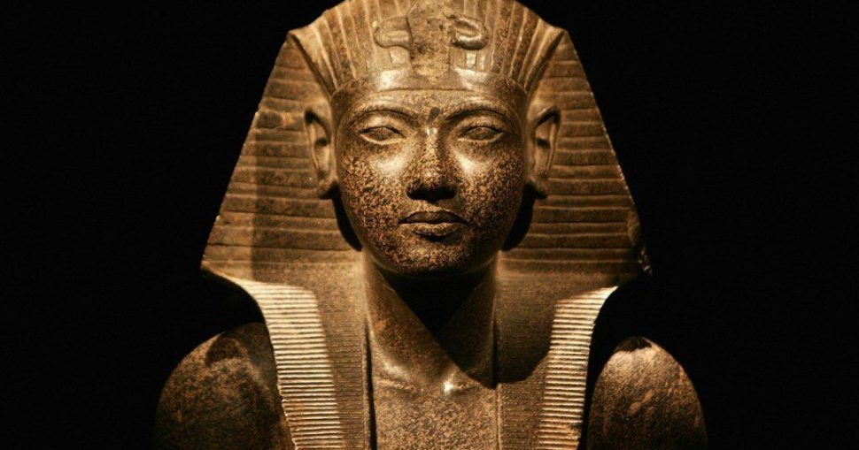
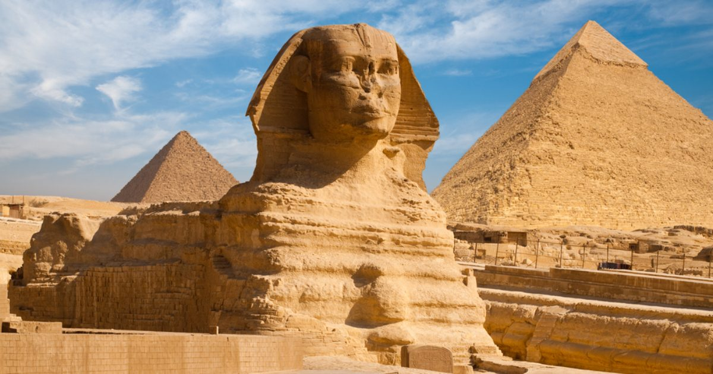
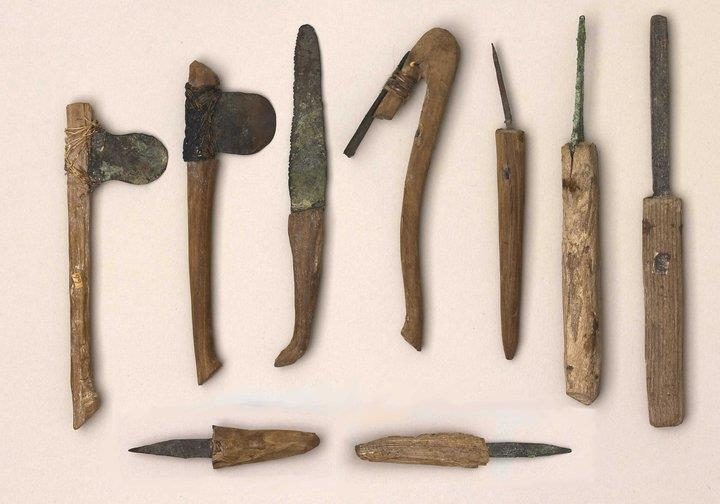
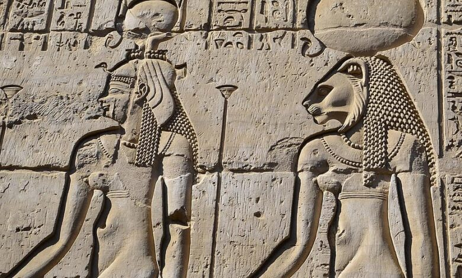
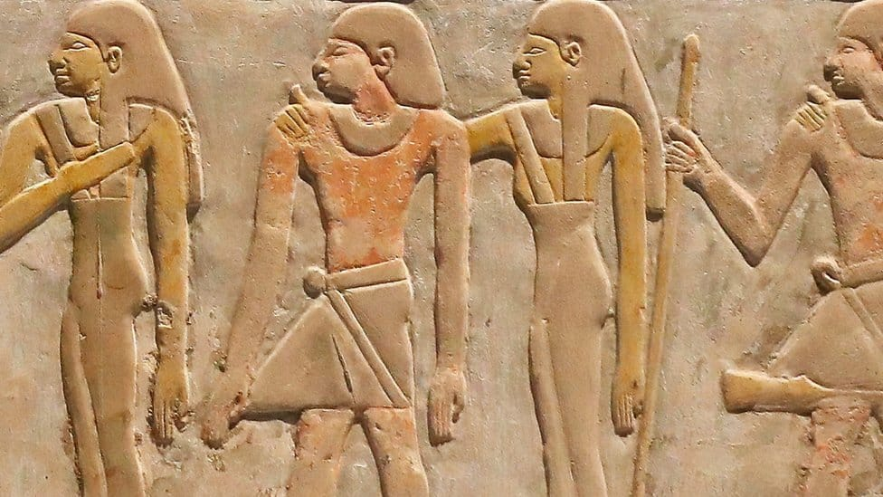

تماثيل الملوك والآلهة
تماثيل الملوك تمثل السلطة والخلود، مثل أبو الهول وتماثيل توت عنخ آمون، بينما تماثيل الآلهة تجسد صفات كل إله، مثل آمون رع وحورس.

أبو الهول مثال على النحت الملكي
أبو الهول يجمع بين جسم الأسد ورأس الملك، رمز للقوة والثبات، ويعكس الأسلوب الكمالي الذي يميز الفن المصري القديم.

أسلوب الفن: هدوء، ثبات، كمالية
النحت المصري القديم يتميز بالهدوء في التعبير، الثبات في الوضعيات، والكمالية في التفاصيل، مما يعطي التماثيل طابعًا خالدًا وأسطوريًا.

الدور الديني والسياسي للنحت
كان النحت أداة دينية وسياسية، يعبر عن مكانة الملك والآلهة، ويستخدم في المعابد والمقابر لإيصال رسالة الخلود والقوة للأجيال القادمة.

أهمية النحت في الحضارة المصرية
النحت يعكس براعة المصريين القدماء في الفن والهندسة، ويعتبر مرجعًا لفهم معتقداتهم الدينية، أساليب الحكم، وجماليات الفن القديم.